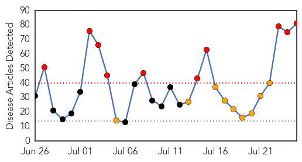
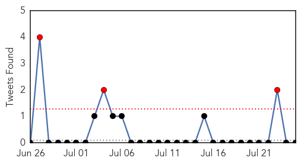

Ebola
30-Day Web Trend
10 alerts, 9 warnings

30-Day Twitter Trend
1 alerts, 1 warnings

Article Locations

Article Confidences

Top Articles:
- 1.000
- In Nigeria, Liberian Tests Positive for Ebola
- 1.000
- Ebola Takes First Life In Nigeria
- 1.000
- Top Ebola doctor in Sierra Leone infected with virus
- 1.000
- Ebola virus reaches Nigeria
- 1.000
- Nigeria confirms Liberian man died of Ebola in Lagos
- 1.000
- First Ebola patient from Sierra Leone is on the run
- 1.000
- Potential Outbreak of Ebola in Nigeria
- 1.000
- Infected Ebola woman on the run
- 1.000
- Largest Ebola Outbreak in History Continues to Spread
- 1.000
- Nigeria tests Liberian man for Ebola - Africa
- 1.000
- a ruthless killer reaches Nigeria
- 1.000
- Ebola Outbreak Threatens To Spread With Cases In Freetown, Sierra Leone And Lagos, Nigeria
- 1.000
- Doctor at forefront of fight against Ebola contracts the disease
- 1.000
- Ebola victim in Sierra Leone capital on the run
- 1.000
- Ebola outbreak: Liberian man dies in quarantine in Nigeria
- 1.000
- Ebola outbreak: Liberian man dies in quarantine in Nigeria
- 1.000
- Sierra Leone hunts Ebola patient kidnapped in Freetown
- 1.000
- West Africa Ebola death toll reaches 660: WHO
- 1.000
- Ebola epidemic gets 'Out of Control' in West Africa
- 1.000
- Ebola outbreak: Time to test experimental vaccines?
- 0.999
- Sierra Leone's top Ebola Doctor contracts the virus
- 0.999
- Liberian man in Lagos being tested for Ebola
- 0.999
- First Ebola victim in Sierra Leone capital on the run
- 0.999
- Ebola: a ruthless killer reaches Nigeria
- 0.999
- Advice for Irish travelers updated, as Ebola spreads to Nigeria
- 0.999
- First case of ebola reported in Africa's most populous city Lagos
- 0.999
- West Africa's Ebola outbreak is spiraling out of control
- 0.999
- Ebola Confirmed In Nigerian Capital City Of Lagos; 21 Million City Residents Now At Risk Of Exposure
- 0.999
- Cornering Ebola
- 0.999
- First Ebola Patient From Sierra Leone Capital Is On The Run
- 0.999
- Sahara Reporters
- 0.999
- Ebola outbreak in Sierra Leone has two Morristown volunteers watching, waiting
- 0.999
- Ebola outbreak: Is it time to test experimental vaccines?
- 0.998
- A woman with deadly Ebola virus escapes quarantine, now loose in a city of 1 million
- 0.998
- Man with Ebola-like symptoms dies in Nigeria
- 0.998
- Suspected Ebola patient dies in Lagos
- 0.998
- Nigeria's most populous city reports suspected Ebola virus carrier
- 0.998
- Ebola victim on the run in Sierra Leone
- 0.997
- Fight against Ebola unites Salone politicians
- 0.997
- President of Liberia honors WHO for support in health - Liberia
- 0.996
- Liberian undergoing treatment for Ebola dies in Lagos
- 0.995
- Nigeria government confirms Ebola case in megacity of Lagos
- 0.995
- ONE THIRD TO DIE BY PLAGUE OR FAMINE; ONE THIRD WILL FALL BY THE SWORD; ONE THIRD TO BE SCATTERED TO EVERY WIND
- 0.992
- Nigeria tests for first suspected Ebola case
- 0.992
- Ebola Epidemic Strikes Top Health Worker
- 0.991
- Nigerian Government Confirms Ebola Death In City Of Lagos
- 0.991
- Nigeria government confirms Ebola case in megacity of Lagos
- 0.991
- Nigeria confirms first Ebola death
- 0.990
- Sahara Reporters
- 0.989
- Ebola virus comes to Lagos, Nigeria
Showing top 50 articles...
Top Tweets:
-
No tweets found for Jul 25, 2014
Measles
30-Day Web Trend
0 alerts, 0 warnings

30-Day Twitter Trend
0 alerts, 0 warnings

Article Locations

Article Confidences

Top Articles:
Top Tweets:
-
No tweets found for Jul 25, 2014